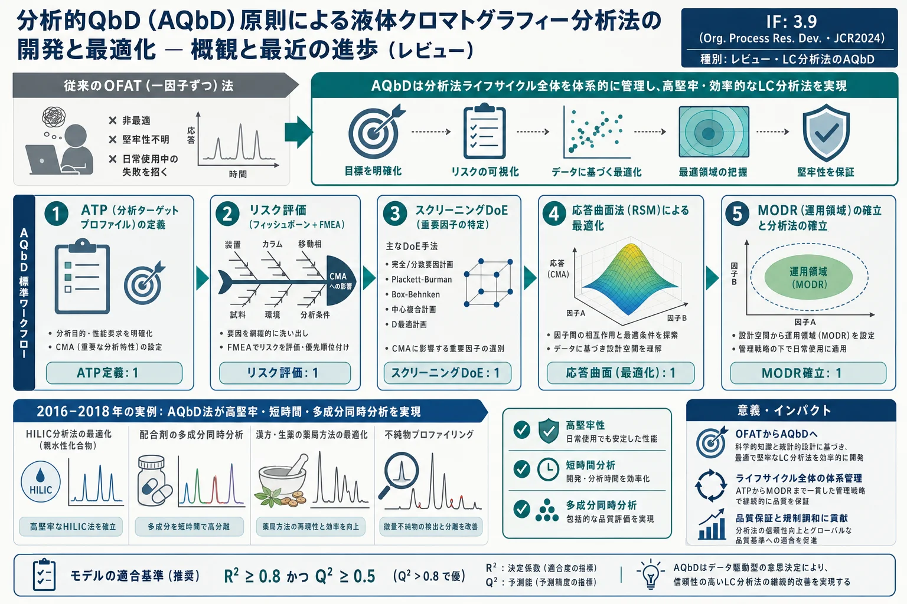
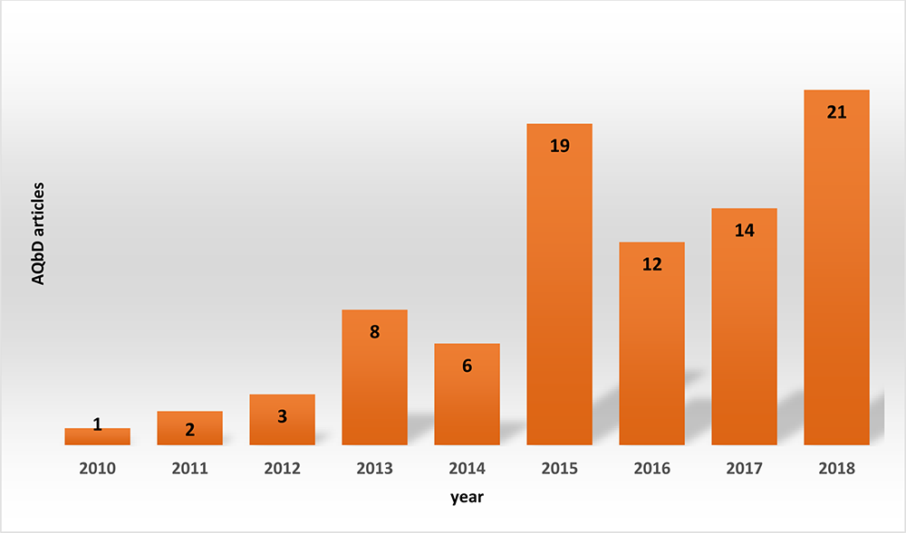
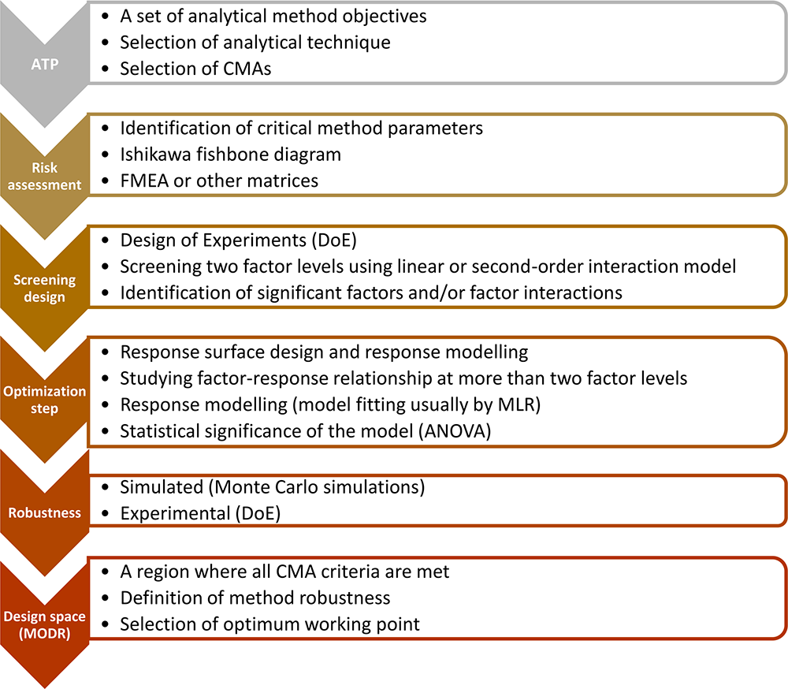
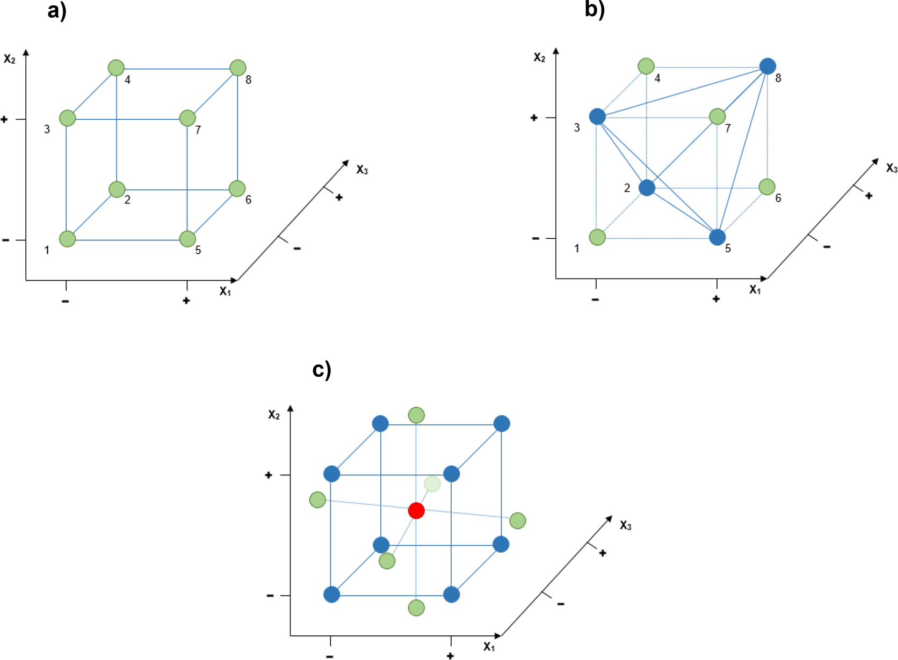
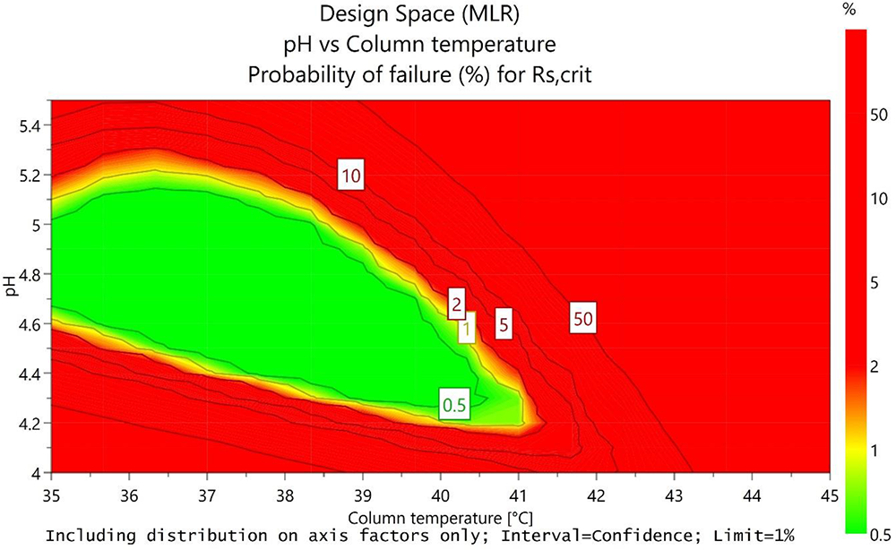
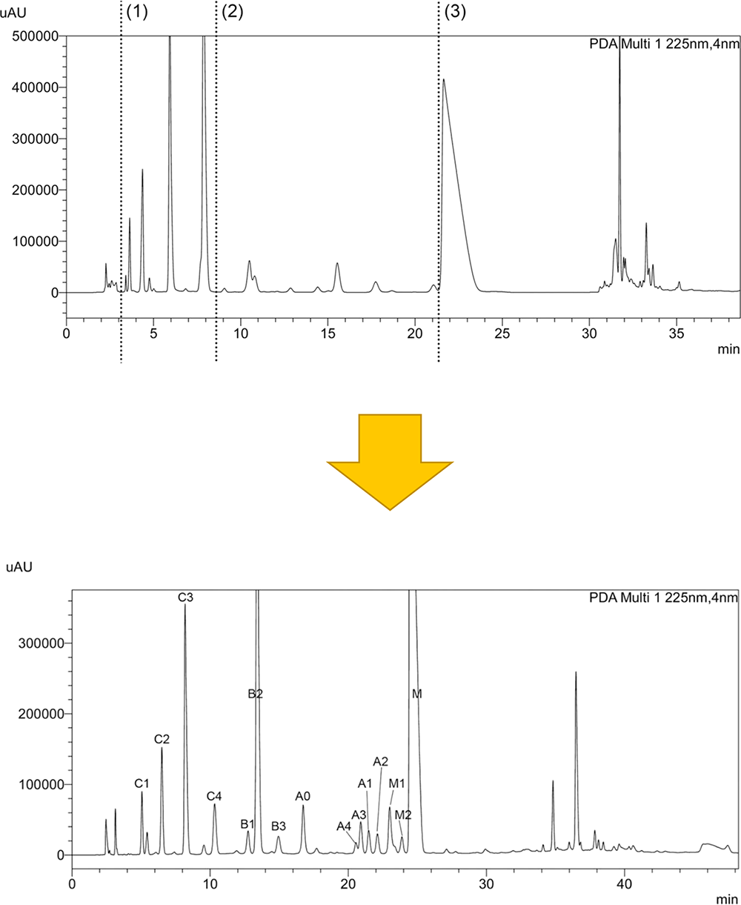

分析的QbD（AQbD）原則による液体クロマトグラフィー分析法の開発と最適化 — 概観と最近の進歩（レビュー）

<!-- Tome, Žigart, Časar, Obreza, Org. Process Res. Dev. 2019, 23, 1784-1802（Review・オープンアクセス）の全訳密度日本語版。 LC分析法のAQbD総説。practitioner レベル。理論部は詳述、多数の事例は各節の代表例で要約。 DoE設計・回帰式・統計指標は本文の通り。表1（その他の研究）は代表項目を掲載。図は原文参照。 -->
書誌情報
- 標題（原題）: Development and Optimization of Liquid Chromatography Analytical Methods by Using AQbD Principles: Overview and Recent Advances
- 著者: Tim Tome, Nina Žigart, Zdenko Časar（責任著者）, Aleš Obreza（責任著者）
- 所属: リュブリャナ大学 薬学部（スロベニア）／Sandoz Development Center Slovenia, Lek Pharmaceuticals 分析部門
- 掲載誌・巻号・DOI: Organic Process Research & Development, 2019, 23, 1784−1802. DOI: 10.1021/acs.oprd.9b00238（レビュー・CC-BYオープンアクセス）
- インパクトファクター: 3.9（Organic Process Research & Development, JCR 2024 / Clarivate）
- 受理経過: 2019年5月21日受領／8月14日公開。© 2019 American Chemical Society
補足: 本論文は、製薬分析法の開発を「一因子ずつ（OFAT）」の職人技から「分析的QbD（AQbD）」の体系的手法へ転換するための、実務者向けの基礎的レビュー。本サイトの他のAQbD論文（ICH Q14 Perspective、Accred Qual Assur 総説）が規制枠組みに寄っているのに対し、本論文は「実際にLC法をどう組み立てるか」の具体的ワークフローとDoE手法・数式・実例に重点を置く。頻繁に引用される定番レビューで、生薬・漢方の多成分HPLC法を体系的に開発する際の教科書として有用。本文にツムラ（Tsumura And Co.）のダウンロード記録がある。
要旨（Abstract）
本レビューは、Quality by Design（QbD）の拡張である分析的Quality by Design（AQbD）の概念を提示する。QbDは2004年に米国FDAが導入し2005年にICHが承認した。AQbDは方法開発への体系的アプローチで、分析手順ライフサイクルの全段階を管理する。分析ターゲットプロファイル（ATP）の定義、重要方法パラメータ（因子）の同定、重要方法属性（CMA、応答）の選択を含む。スクリーニング・応答曲面実験計画により有意因子を認識し統計解析で最適化する。因子-応答関係は数理モデルで記述され、最適応答を予測できる。CMA要件を満たす因子の多変量組み合わせが設計空間または方法操作可能設計領域（MODR）として提示され、堅牢な方法性能が保証される。
本レビューは方法開発のためのAQbDの理論的背景と、AQbD概念が信頼できる効果的アプローチと証明された最近の刊行事例を通じたワークフローを提示する。AQbDアプローチで開発した分析法は高度に堅牢で、容易に検証でき、ラン時間が短く、一因子ずつ（OFAT）アプローチで開発した方法と比べ1回のランでより多くのアナライトを測定できる。
キーワード: AQbD、液体クロマトグラフィー、分析法の堅牢性、分析法の最適化、製薬分析、医薬品
1. 序論（Introduction）
製薬業界の主目標は、十分な品質・効能・安全性の医薬品を提供することである。新薬とその生産は分析試験を含む多くの製薬過程から成る。生成される分析データは開発の追求方法の判断を支え、あるいは医薬品を出荷すべきかの情報を提供する。各開発・生産過程が一定品質の信頼できる結果を提供することが重要で、そのため管理と必要な継続的改善を要する。製薬過程の品質改善により医薬品の品質も改善される。
分析法は医薬品開発・生産で最も重要な過程の一つで、医薬品ライフサイクルの全段階で他の過程を支える鍵となる。分析法は精密・正確・信頼でき意図する目的に適することが不可欠。大半の場合、分析法の主要な作動原理は試料中のアナライトの分離で、液体クロマトグラフィー（LC）技術（HPLC/UPLC、しばしば逆相・UV検出）が最も一般的に使われる。分析目的は決定すべきアナライトの数・重要性・関係で異なる。原薬（API）のアッセイや関連物質・分解物の測定の分析法が最も一般的。
関連物質・分解物測定の特異的で堅牢な安定性指示LC法の開発は複雑な過程で、加水分解・酸化・光分解・熱などの各種ストレス条件下での意図的な強制分解を要する（ストレス条件はICHガイドラインの加速・長期安定性条件より厳しい）。分解物測定法は製品有効期間中の増加を検出でき、アッセイ法は原薬含量の減少を検出できるべき——これが安定性指示法。開発中の医薬品試料には、APIに加え原料の不純物・合成中間体・工程不純物・賦形剤も含みうる。立体中心を持つAPIはジアステレオマー・エナンチオマーなど近縁構造を形成し分離がさらに難しくなる。これら不純物は治療効果がなく薬の効能低下や患者健康を脅かしうるため、開発・生産・全ライフサイクルで管理が必要。
調べる化合物数が増えるとLC法の複雑さも増す。損なってはならない重要な特徴が堅牢性である。ICH Q2(R1)は分析手順の堅牢性を「方法パラメータの小さいが意図的な変動の影響を受けずに残る能力の尺度で、通常使用中の信頼性の指標を提供する」と定義し、方法開発段階で評価すべきとする。しかし従来の方法開発・堅牢性研究がこの要件を満たすかには多くの合理的疑問がある。
HPLC法はしばしば試行錯誤や一因子ずつ（OFAT） アプローチで開発され、十分な分解能が得られるまで連続実験で1つのクロマトパラメータを変える。分離に影響するパラメータが多いと実験数が大幅に増える。このアプローチは分析者の知識・経験に基づく重要方法パラメータの同定を欠き、分離への影響が無視できる関連性の低いパラメータを調べる際に非常に時間を浪費する。加えて重要になりうる因子間の交互作用がめったに研究されない。したがってOFAT開発はしばしば多パラメータ交互作用効果の理解不足の非最適な方法を招き、非堅牢な方法性能に至る。
通常、方法開発・バリデーションは1つのラボで行い、日常分析は別のラボで行う。一貫しない方法性能が方法移管を重大にしうる（異なるLCシステム・カラム/溶媒バッチ・分析者による変動）。これらが日常使用の方法動作に大きく影響しOOT（傾向外）・OOS（規格外）結果を招く。方法移管が成功しても、それは移管時点・場所での十分な動作を確認する一度限りの作業で、ライフサイクル全体の一貫した信頼性を証明しない。OFAT開発の方法は失敗リスクが高くパラメータ変更をしばしば実施せねばならず、再バリデーションプロトコルと規制当局への変更提出が必要でコスト・時間・資源に悪影響。
2004年、FDAがQbD概念を新薬・関連過程開発の必須ツールとして導入。主目的は相互依存する製薬過程で科学的に設計して品質を直接医薬品に作り込むこと。2005年にICHが承認し、ICH Q8(R2)が「事前定義された目標から始まり健全な科学と品質リスク管理に基づいて製品・過程理解を強調する体系的開発アプローチ」と定義。同年ICH Q9（品質リスク管理）、2008年ICH Q10、2012年ICH Q11が発行。ICH Q8(R2)はQbDを製薬開発のライフサイクル管理の一部として要請するが、分析手順ライフサイクル管理（方法開発・バリデーション・移管・継続的改善）へのQbD拡張の機会がある。
2015年7月、FDAが医薬品・生物製剤の分析手順・方法バリデーションの新ガイダンスを公表——堅牢性研究では初期リスク評価から始まり方法パラメータの多変量実験（DoE）で因子効果を完全に評価する体系的アプローチを採るべきと推奨。2017年、Pharmacopeial Forumで新USP一般章〈1220〉「分析手順ライフサイクル」の提案が議論され、設計・開発／性能適格性確認／継続的性能検証の3段階へのQbD拡張を強調。2018年6月、ICHが分析手順開発・バリデーションの新Q14ガイドライン（Q2(R1)改訂＝Q2(R2)とAQbD概念を含む）の準備開始を発表。これらガイドラインが科学界にAQbD探求の弾みを与え、AQbD要素を含む論文数が増加している。

2. AQbDの理論的背景

AQbDの第1ステップ（Figure 2）は方法要件の事前定義＝分析ターゲットプロファイル（ATP）。ATPは、何を測定するか・測定で達成すべき性能基準（精度・正確性・範囲など）を定義する分析法目標の集合。方法開発開始前に確立し、意図する目的を定義するが分析技術は指定しない。例えば「規格限度0.20%以下の原薬の関連物質・分解物測定」のATPは「分析手順は、賦形剤・他成分の存在下で原薬の全既知/特定関連物質・分解物を、報告限度から規格限度の120%まで、真値の±20.0%以内の正確性で定量的に測定できるべき」となる。規制当局承認後、ATPは規制柔軟性を支えて方法の継続的改善を促進し、分析手順ライフサイクルの全段階で考慮すべき。
ATP定義後、ATP要件を満たせる分析技術を選択。不純物プロファイリングにはHPLCが最も関連的。多数の操作変数のため複雑だが、意図する目的に適切に最適化すれば精密・正確な結果を提供できる。UPLC（2004年デビュー）は顕著なアップグレードで、1200-1400 barで動作しサブ2 μm粒子カラムの背圧を補償し高スループット（高分解能・改善された精度感度・高速分析・溶媒消費低減）を達成。
次のステップは重要方法属性（CMA） の選択——方法性能を管理するために測定する応答。CMAはATPに基づく方法の意図と性能基準の強い結びつきを表し方法規格とみなせる。CMAは分析技術・作動原理・目的に依存し、通常、選択性・精度・感度・正確性に関連。不純物プロファイリングHPLC法では通常の主要CMAは臨界ピーク対の分解能（Rs）（保持時間差や選択性係数αで代替可）。アッセイHPLC法では主ピークの形状に依存しテーリング係数（T）・理論段数（N） が重要CMA。一部の論文はCMAをCQA（重要品質特性）と呼ぶ（分析法のCMAは医薬品のCQAの類似物）。
分析技術により多くのパラメータが方法性能に関与し、その変動が選択CMAに有意な影響を与えうる。HPLCでは緩衝液pH・緩衝液濃度・有機溶媒タイプ・カラム温度・勾配傾きなど複数のパラメータがあり、必要な分離とCMA要件を満たすよう適切に調整せねばならない。したがって分析者は方法パラメータの早期の重要評価に努力・知識を注ぎ、高リスクパラメータを同定する。リスク評価にはフィッシュボーン（石川）図が広く使われ、潜在因子を同定し因子関連リスクを装置・材料・方法・測定・ラボ環境・人的因子のカテゴリーに分配。因子はFMEA（故障モード影響解析）や優先順位マトリクスでさらに評価・優先順位付けし、各因子のリスク重大度を評価。
2.1 スクリーニング実験計画（DoE）
HPLCの利点は汎用性だが、多数の変数のため、分離に影響する重要因子が適切に設定されないとクロマト性能が重大になる確率が高い。したがってDoE戦略を適用すべき。DoEは実験設計・数理モデリングに統計ツールを使う体系的アプローチ。実験計画で1つ以上の因子を同時に変えて特定応答への効果と交互作用を研究。因子-応答関係は所与次数の多項式群から組み立てた数理モデルで記述。DoEは最小限の実験数で有意因子を同定・最適化する効率的方法。
リスク評価完了時、多くの因子がHPLC分離に影響するように見えるが全てが必ずしも有意ではない。スクリーニング設計は潜在的重要因子から最も有意な因子・因子交互作用を選び「知識空間（knowledge space）」を確立。実験計画で潜在的重要因子の変動は、CMAの最小要件を満たすか超える応答値を達成するのに十分大きくする必要。各CMAに満たすべき最小要件と達成を意図する目標がある（例: 不純物プロファイリングのHPLCで分解能Rsは2.0以上、目標2.5以上）。アッセイHPLCではテーリング係数の最小要件が最大値（テーリングが少ない 0.8≤T≤1.5 ほど精密な積分・正確な定量が可能）。

スクリーニング設計では通常2水準を線形または2次交互作用モデルで調べる。線形モデルの多項式は線形（y = b0 + b1x1 + b2x2 + 残差）で因子-応答関係は一次多項式で記述。2次交互作用モデルは因子間交互作用も調べ、多項式に交互作用項 b12x1x2 を追加（y = b0 + b1x1 + b2x2 + b12x1x2 + 残差）。最もよく使うスクリーニング設計は2水準完全要因設計・分数要因設計・Plackett-Burman設計。これらは少ない実験で多数の因子をスクリーニングでき、堅牢性・頑健性試験にも使える（3因子2水準完全要因=8実験、分数要因=4実験、中心複合設計=15実験など、Figure 3）。
2.2 応答曲面設計と応答モデリング
より高次のDoEが応答曲面設計。スクリーニングで決めた有意因子（交互作用含む）を最適化するステップ。因子を2水準超で調べ、応答との関係を二次以上の多項式で記述（y = b0 + b1x1 + b2x2 + b11x1² + b22x2² + b12x1x2 + 残差）。二次項の導入で因子-応答の非線形関係（モデル曲率）を決定できる。因子を2水準超で調べるため実験領域に反復中心点を含め実験誤差を推定。例: 3水準完全要因設計・中心複合設計（CCD）・Box-Behnken設計・Doehlert設計。因子水準に制約があれば非対称実験領域をカバーするD最適設計を使える。これらは同数因子でスクリーニング設計よりはるかに多くの実験を要するが、所与の因子組み合わせの応答を予測でき最適応答を予測する因子組み合わせを見つけるのに使う。
実験完了後、応答をモデル化。多項式モデルを実験データに当てはめ応答を因子・交互作用に結ぶ。モデル当てはめは通常重回帰（MLR） で、多項式の各因子項に対応する回帰係数（b0, b1, b2, b11, b22, b12...）を計算して因子・交互作用効果を評価。ANOVAでモデルの統計的有意性を判定——応答の総変動を回帰成分と残差成分の和として記述（MStotal = MSregression + MSresidual）。F検定でモデル有意性を判定（Fモデル有意性 = MSregression/MSresidual、臨界F値より大きければ有意、例 p≤0.0005）。反復実験があれば残差を適合欠如（LoF）と純誤差に分解（MSresidual = MSLoF + MSpure error）、Fモデル適合度 = MSLoF/MSpure error が臨界F値より大きければLoFが有意。
MODDE・Design-ExpertなどのソフトはR²（説明変動）とQ²（予測変動）の2指標を提供——R²はモデルが応答変動をどれだけ記述するか、Q²はモデルの予測能を示す（0〜1）。通常、非有意因子の除外でR²・Q²が増加。Lundstedtらによれば許容モデル適合にはR²≥0.8かつQ²≥0.5が必要、Q²>0.8で優れた適合。応答曲面設計は因子間交互作用・高次効果項を調べ、応答挙動の深い理解を提供し、所与の因子組み合わせの応答を予測できる数理モデル開発を促進。
2.3 理論モデルベースのLC法開発
実験データ・数理統計モデリングに基づく経験モデルに加え、代替の高度な方法開発を適用できる。主な利点はランダムなクロマトパラメータ組でクロマトグラムを予測できること。HPLCパラメータ（移動相組成・pH・カラム温度・勾配時間）を同時に変えると、ソフトがピーク移動を予測しクロマトグラムをシミュレート。最適分離のシミュレーションに比較的少数の実験で済む。市販ソフト例はDryLab（Molnár Institute）。DryLabの作動原理は線形溶媒強度理論モデル（solvophobic理論）に基づき勾配溶出原理を重視。
2.4 設計空間

方法の設計空間確立が分析者の主目標。設計空間は応答曲面設計のDoE結果を応答モデリングで解釈して確立。通常、各応答の等高線図を重ねた多応答曲面プロットとして図示。設計空間は、事前定義された全CMA基準が満たされ方法が堅牢と定義される、因子値の多変量範囲で形成される実験領域の限界内の領域。分析法の動作性能を特に表す設計空間を方法操作可能設計領域（MODR） と呼ぶ（Figure 4）。
MODR限界内のパラメータ値で動作する分析法は、適切な確率で品質結果を提供できる。方法はもはや1つの設定値のみでなくMODR内のどこでも動作可能で、全変動源をシステム適合性試験（SST）などの管理戦略で制御。規制の観点で、バリデーション後のMODR内の移動は変更でなく調整とみなされ再バリデーション不要。MODRは日常使用の柔軟性を提供し分析法の堅牢性領域を表す。ICH Q8(R2)は設計空間限界内のパラメータが「品質の保証を提供」できる必要があると定義。設計空間作成時、応答測定・モデル不確かさに由来する変動を認識せねばならない。そうして初めて応答（CMA）が事前定義基準に達する確率が十分高く（例 99%確実性）方法の適切な品質を確保。モンテカルロシミュレーションがモデル不確かさ推定に最もよく使われ、設計空間内でCMA規格が満たされる適切な保証水準を提供。
3. AQbDのLC法開発への最近の応用
本レビューの後半は、AQbDをHPLC測定法（主にUV検出）開発に応用した2016-2018年の研究論文を詳細にレビュー。対象は小分子（合成品）のアッセイ・不純物測定で、試料はAPI・単剤・配合剤。DoE・データ解析・設計空間確立に様々なソフトを用いる事例（経験モデル・理論モデルベース）も提示。
3.1 HILIC法の開発
親水性相互作用液体クロマトグラフィー（HILIC）は逆相HPLCより使用頻度が低い技術。移動相が極性で3%以上の水相を含み、シリカ粒子に水層が吸着して固定相を極性化。強極性化合物の保持に適するが、保持機構が複雑（逆相・イオン交換・サイズ排除・液液分配）で特異的HILIC法は非堅牢になりうるため体系的AQbDが望ましい。
Terzićらはビラスチンとその2分解不純物のHILIC法をAQbDで開発。3アナライトの最大分離を最小ラン時間で達成が目標。臨界不純物ピーク対の選択性係数（α）と最終溶出不純物の保持係数（k'）をCMAに選択。予備研究でカラム・温度・緩衝塩・流速・検出波長を選び、重要方法パラメータ（アセトニトリル含量・緩衝液濃度・pH）を認識——スクリーニング設計は不要だった。3水準Box-Behnken応答曲面設計（MODDE 11、15実験＋3中心点反復）で最適化。MLRでモデル当てはめ（R²≥0.94、調整R²≥0.90、Q²≥0.80、LoF無視できる）。モンテカルロで99%確率の設計空間を確立し、15分以内で3アナライトを最良分離する最適点を同定。2水準分数要因設計で堅牢性研究（11実験）も実施し堅牢性領域を実験確認。

Tumpaらはオランザピンと7不純物の勾配溶出HILIC法をAQbDで開発。アセチル不純物-ダイマー不純物間（s1）とオランザピン-脱メチル不純物間（s2）の分離基準をCMAに。カラム温度・初期緩衝液含量・線形勾配時間を重要パラメータと認識。Rechtschaffen最適化設計（MODDE 11、10実験＋3中心点）でモデル化（R²≥0.91、調整R²≥0.84、Q²≥0.64）。モンテカルロで99%確実性の設計空間を作り、20分以内で全アナライトを優れて分離する最適点を実験検証。
3.2 配合剤
2つ以上のAPIを含む配合剤は多標的作用・患者の取り扱い容易化の利点があるが、API数増加で複雑性が増す。Tolら（2016）は3 API（アバカビル・ラミブジン・ドルテグラビル）の関連物質・分解物の同時測定逆相HPLC法をAQbDで開発。OFATでは3主成分・11既知不純物・約16未知不純物を効率分離できず2つの別法になっていた。10 CMAのうちラミブジンカルボン酸不純物の保持時間（RT）と2アバカビル不純物間の臨界分解能（Rs）を最重要と決定。カラム温度・移動相B組成・緩衝液pHを重要因子とし2水準完全要因設計（Design-Expert 9.0、11実験＋3中心点）で調査。単一の堅牢なHPLC法を確立。
3.3 薬局方法の最適化
既存の薬局方（Pharmacopeial）法をAQbDで最適化・改善する事例も複数。安定性指示法として不純物・APIをより良く分離するよう、DoE（完全要因・CCD等）で再最適化し、より短時間・高分解能・多成分同時測定を達成した例が示される（相関係数R>0.99996級の高直線性、堅牢性試験込み）。
3.4 不純物プロファイリング
DryLab 4（理論モデルベース）を用いた事例——複数カラム・複数pH（例 4.0/4.5/5.0）で各12実験を行い3D保持モデル（勾配時間×温度×pH）を構築、シミュレーションで最適分離を予測・実験検証。Plackett-Burman設計（12実験）でのスクリーニング、隣接ピーク対のRs≥1.5をCMA、堅牢性でPlackett-Burman設計を用いた事例なども紹介。Zhang & Huはクロキサシリンの15超の分解物を、単一勾配ラン中に有機溶媒タイプと緩衝液pHを同時に変える二重勾配溶出で分離（Figure 9）。
3.5 その他の方法（Table 1 の代表例）
- 18抗レトロウイルス薬＋4賦形剤のLC法: D最適設計＋多変量重回帰＋ベイズモデル＋モンテカルロ（JMP・R・e-noval）。
- 16 APIの分離UHPLC法: Plackett-Burmanでスクリーニング＋中心複合設計で最適化＋Plackett-Burmanで堅牢性（JMP・MATLAB）。
- スピラマイシンのLC法: 2水準完全要因設計での堅牢性研究＋多変量解析（R）。
- 長時間循環リポソームのクルクミノイド・ドキソルビシンのHPLC: D最適設計＋モンテカルロでMODR生成（MODDE 10）。
- 病院薬局の24抗腫瘍薬のUHPLC-MS: 完全要因設計＋3D保持モデル（tG×T×pH）＋堅牢性試験（DryLab 4）。
- カナグリフロジンAPIのHPLC: DoEで開発・最適化＋MODR確立＋堅牢性・頑健性試験。
4. 結論（Conclusion）
分析法は医薬品開発・生産で鍵となる役割を果たし、LC（HPLC/UPLC）が最も一般的。医薬品の複雑性が増すと方法の複雑性も増し開発が困難になる。最重要特徴の一つが堅牢性で、方法開発中に評価すべき。堅牢な方法は一定品質の信頼できる結果を提供する。従来のOFATアプローチは通常、堅牢性の知識なしに非最適な方法を生み、日常使用中の方法失敗を招く。
AQbDはATP設定→CMAとその規格の決定→重要方法パラメータ（因子）の同定から始まる体系的方法開発アプローチ。DoEがAQbDの重要部分で、統計ツールで実験設計・数理モデリングを行う。スクリーニング設計で有意因子を同定し知識空間を確立。応答曲面設計で有意因子・交互作用・高次項を実験・統計解析（応答モデリング）で調べる。最終的に設計空間/MODRを確立——事前定義された全CMA基準が満たされ方法が堅牢と定義される因子値の多変量範囲。設計空間限界内の移動は方法変更とみなされず規制要件への柔軟性を示す。
方法に品質を設計することで、AQbDは分析法の全体的ライフサイクル概念を完成させる。実例を用いて本レビューは、AQbD法が最適動作し高堅牢・容易な検証・費用時間効率的で（方法開発の実験作業が少ない）、最小ラン時間で最大分離性能を達成できることを示した。汎用性のためAQbDはLC以外の分析法（例 GC）にも適用でき、将来のGC分野での応用が期待される。
参考文献
- Parr, M. K.; Schmidt, A. H. Life Cycle Management of Analytical Methods. J. Pharm. Biomed. Anal. 2018, 147, 506−517.
- Gaudin, K.; Ferey, L. Quality by Design: A Tool for Separation Method Development in Pharmaceutical Laboratories. LC-GC 2016, 29 (10), 16−25.
- Maggio, R. M.; Vignaduzzo, S. E.; Kaufman, T. S. Practical and Regulatory Considerations for Stability-Indicating Methods for the Assay of Bulk Drugs and Drug Formulations. TrAC, Trends Anal. Chem. 2013, 49, 57−70.
- Blessy, M.; Patel, R. D.; Prajapati, P. N.; Agrawal, Y. K. Development of Forced Degradation and Stability Indicating Studies of Drugs A Review. J. Pharm. Anal. 2014, 4 (3), 159−165.
- Singh, S.; Junwal, M.; Modhe, G.; Tiwari, H.; Kurmi, M.; Parashar, N.; Sidduri, P. Forced Degradation Studies to Assess the Stability of Drugs and Products. TrAC, Trends Anal. Chem. 2013, 49, 71−88.
- ICH Harmonised Tripartite Guideline: Stability Testing of New Drug Substances and Products Q1A(R2), current Step 4 version; International Conference on Harmonisation: Geneva, 2003.
- ICH Harmonised Tripartite Guideline: Validation of Analytical Procedures: Text and Methodology Q2(R1), current Step 4 version; International Conference on Harmonisation: Geneva, 2005.
- McDowall, R. D. Life Cycle and Quality by Design for Chromatographic Methods. LCGC Eur. 2014, 27 (2), 91−97.
- Peraman, R.; Bhadraya, K.; Padmanabha Reddy, Y. Analytical Quality by Design : A Tool for Regulatory Flexibility and Robust Analytics. Int. J. Anal. Chem. 2015, 2015, 868727.
- Borman, P.; Truman, K.; Thompson, D.; Nethercote, P.; Chatfield, M. The Application of Quality by Design to Analytical Methods. Pharm. Technol. 2007, 31 (10); http://www.pharmtech. com/application-quality-design-analytical-methods
- Sangshetti, J. N.; Deshpande, M.; Zaheer, Z.; Shinde, D. B.; Arote, R. Quality by Design Approach: Regulatory Need. Arabian J. Chem. 2017, 10, S3412−S3425.
- Pharmaceutical CGMPs for the 21st CenturyA Risk-Based Approach, Final Report; U.S. Food and Drug Administration: Silver Spring, MD, 2004.
- ICH Harmonised Tripartite Guideline: Pharmaceutical Development Q8(R2), current Step 4 version; International Conference on Harmonisation: Geneva, 2009.
- ICH Harmonised Tripartite Guideline: Quality Risk Management Q9, current Step 4 version; International Conference on Harmonisation: Geneva, 2005.
- ICH Harmonised Tripartite Guideline: Pharmaceutical Quality System Q10, current Step 4 version; International Conference on Harmonisation: Geneva, 2008.
- ICH Harmonised Tripartite Guideline: Development and Manufacture of Drug Substances (Chemical Entities and Biotechnological/Biological Entities) Q11, current Step 4 version; International Conference on Harmonisation: Geneva, 2012.
- Vogt, F. G.; Kord, A. S. Development of Quality-By-Design Analytical Methods. J. Pharm. Sci. 2011, 100 (3), 797−812.
- Analytical Procedures and Methods Validation for Drugs and BiologicsGuidance for Industry; U.S. Food and Drug Administration: Silver Spring, MD, 2015.
- Martin, G. P.; Barnett, K. L.; Burgess, C.; Curry, P. D.; Ermer, J.; Gratzl, G. S.; Hammond, J. P.; Herrmann, J.; Kovacs, E.; LeBlond, D. J.; et al. Stimuli to the Revision Process: Proposed New USP General Chapter: The Analytical Procedure Lifecycle ⟨1220⟩. Pharmacopeial Forum 2017, 43 (1); https://www.uspnf.com/sites/ default/files/usp_pdf/EN/USPNF/revisions/s201784.pdf.
- ECA Academy. New ICH Guidelines: ICH Q13 on Conti Manufacturing and ICH Q14 on AQbD. https://www.gmpcompliance.org/gmp-news/new-ich-guidelines-ich-q13-on-contimanufacturing-and-ich-q14-on-aqbd (accessed Jan 22, 2019).
- Kochling, J.; Wu, W.; Hua, Y.; Guan, Q.; Castaneda-Merced, J. A Platform Analytical Quality by Design (AQbD) Approach for Multiple UHPLC-UV and UHPLC−MS Methods Development for Protein Analysis. J. Pharm. Biomed. Anal. 2016, 125, 130−139.
- Boussès, C.; Ferey, L.; Vedrines, E.; Gaudin, K. Using an Innovative Combination of Quality-by-Design and Green Analytical Chemistry Approaches for the Development of a Stability Indicating UHPLC Method in Pharmaceutical Products. J. Pharm. Biomed. Anal. 2015, 115, 114−122.
- Panda, S. S.; Bera, V. V. R. K.; Beg, S.; Sahu, S. K. Ultrafast Liquid Chromatographic Method Development and Its Validation for Quantification of Telaprevir in Pharmaceutical Dosage Form by Using Organic Process Research & Development Review DOI: 10.1021/acs.oprd.9b00238 Org. Process Res. Dev. 2019, 23, 1784−1802 1799 Quality by Design Approach. J. Chromatogr. Sci. 2015, 53, 1193− 1202.
- Beg, S.; Sharma, G.; Katare, O. P.; Lohan, S.; Singh, B. Development and Validation of a Stability-Indicating Liquid Chromatographic Method for Estimating Olmesartan Medoxomil Using Quality by Design. J. Chromatogr. Sci. 2015, 53, 1048−1059.
- Dash, R. N.; Habibuddin, M.; Humaira, T.; Patel, A. A. Application of Quality by Design for the Optimization of an HPLC Method to Determine Ezetimibe in a Supersaturable SelfNanoemulsifying Formulation. J. Liq. Chromatogr. Relat. Technol. 2015, 38, 874−885.
- Oliva, A.; Fariña, J. B.; Llabrés, M. Development and Validation of an UPLC Method for Determination of Content Uniformity in Low-Dose Solid Drugs Products Using the Design Space Approach. Talanta 2013, 115, 490−499.
- Xavier, C. M.; Basavaiah, K. Implementation of Quality by Design for the Development and Validation of Pioglitazone Hydrochloride by RP-UPLC with Application to Formulated Forms. ISRN Chromatogr. 2012, 2012, 592849.
- Garg, L. K.; Sait, S. S.; Krishnamurthy, T.; Kumar, C. H. R. P. Quality by Design (QbD): A Practical Experimental Design Approach by Blocking and Varying Certain Factors of a Stability-Indicating HPLC Method for Simultaneous Determination of Omeprazole and Ketoprofen. J. Liq. Chromatogr. Relat. Technol. 2015, 38, 677−686.
- Devrukhakar, P. S.; Borkar, R.; Shastri, N.; Surendranath, K. V. A Validated Stability-Indicating RP-HPLC Method for the Simultaneous Determination of Tenofovir, Emtricitabine, and a Efavirenz and Statistical Approach to Determine the Effect of Variables. ISRN Chromatogr. 2013, 2013, 878295.
- Pantović, J.; Malenović, A.; Vemić, A.; Kostić, N.; Medenica, M. Development of Liquid Chromatographic Method for the Analysis of Dabigatran Etexilate Mesilate and Its Ten Impurities Supported by Quality-by-Design Methodology. J. Pharm. Biomed. Anal. 2015, 111, 7−13.
- Jovanović, M.; Rakić, T.; Tumpa, A.; Jančić-Stojanović, B. Quality by Design Approach in the Development of Hydrophilic Interaction Liquid Chromatographic Method for the Analysis of Iohexol and Its Impurities. J. Pharm. Biomed. Anal. 2015, 110, 42−48.
- Vemić, A.; Rakić, T.; Malenović, A.; Medenica, M. Chaotropic Salts in Liquid Chromatographic Method Development for the Determination of Pramipexole and Its Impurities Following Qualityby-Design Principles. J. Pharm. Biomed. Anal. 2015, 102, 314−320.
- Schmidt, A. H.; Wess, C. A QbD with Design-of-Experiments Approach for Development of a State-of-the-Art UPLC Purity Method for Carbamazepine. J. Liq. Chromatogr. Relat. Technol. 2014, 37, 2653−2666.
- Karmarkar, S.; Yang, X.; Garber, R.; Szajkovics, A.; Koberda, M. Quality by Design (QbD) Based Development and Validation of an HPLC Method for Amiodarone Hydrochloride and Its Impurities in the Drug Substance. J. Pharm. Biomed. Anal. 2014, 100, 167−174.
- Kormány, R.; Molnár, I.; Rieger, H. Exploring Better Column Selectivity Choices in Ultra-High Performance Liquid Chromatography Using Quality by Design Principles. J. Pharm. Biomed. Anal. 2013, 80, 79−88.
- Zakrajšek, J.; Stojić, V.; Bohanec, S.; Urleb, U. Quality by Design Based Optimization of a High Performance Liquid Chromatography Method for Assay Determination of Low Concentration Preservatives in Complex Nasal Formulations. Acta Chim. Slov. 2015, 62, 72−82.
- Karmarkar, S.; Garber, R.; Genchanok, Y.; George, S.; Yang, X.; Hammond, R. Quality by Design (QbD) Based Development of a Stability Indicating HPLC Method for Drug and Impurities. J. Chromatogr. Sci. 2011, 49, 439−446.
- Garg, N. K.; Sharma, G.; Singh, B.; Nirbhavane, P.; Katare, O. P. Quality by Design (QbD)-Based Development and Optimization of a Simple, Robust RP-HPLC Method for the Estimation of Methotrexate. J. Liq. Chromatogr. Relat. Technol. 2015, 38, 1629− 1637.
- Musters, J.; van den Bos, L.; Kellenbach, E. Applying QbD Principles To Develop a Generic UHPLC Method Which Facilitates Continual Improvement and Innovation Throughout the Product Lifecycle for a Commercial API. Org. Process Res. Dev. 2013, 17, 87− 96.
- Debrus, B.; Guillarme, D.; Rudaz, S. Improved Quality-byDesign Compliant Methodology for Method Development in Reversed-Phase Liquid Chromatography. J. Pharm. Biomed. Anal. 2013, 84, 215−223.
- Kalariya, P. D.; Kumar Talluri, M. V. N.; Gaitonde, V. D.; Devrukhakar, P. S.; Srinivas, R. Quality by Design : A Systematic and Rapid Liquid Chromatography and Mass Spectrometry Method for Eprosartan Mesylate and Its Related Impurities Using a Superficially Porous Particle Column. J. Sep. Sci. 2014, 37, 2160−2171.
- Awotwe-Otoo, D.; Agarabi, C.; Faustino, P. J.; Habib, M. J.; Lee, S.; Khan, M. A.; Shah, R. B. Application of Quality by Design Elements for the Development and Optimization of an Analytical Method for Protamine Sulfate. J. Pharm. Biomed. Anal. 2012, 62, 61− 67.
- Sahu, P. K.; Ramisetti, N. R.; Cecchi, T.; Swain, S.; Patro, C. S.; Panda, J. An Overview of Experimental Designs in HPLC Method Development and Validation. J. Pharm. Biomed. Anal. 2018, 147, 590−611.
- Deidda, R.; Orlandini, S.; Hubert, P.; Hubert, C. Risk-Based Approach for Method Development in Pharmaceutical Quality Control Context : A Critical Review. J. Pharm. Biomed. Anal. 2018, 161, 110−121.
- Dispas, A.; Avohou, H. T.; Lebrun, P.; Hubert, P.; Hubert, C. Quality by Design” Approach for the Analysis of Impurities in Pharmaceutical Drug Products and Drug Substances. TrAC, Trends Anal. Chem. 2018, 101, 24−33.
- Orlandini, S.; Pinzauti, S.; Furlanetto, S. Application of Quality by Design to the Development of Analytical Separation Methods. Anal. Bioanal. Chem. 2013, 405, 443−450.
- Hubert, C.; Houari, S.; Rozet, E.; Lebrun, P.; Hubert, P. Towards a Full Integration of Optimization and Validation Phases: An Analytical-Quality-by-Design Approach. J. Chromatogr. A 2015, 1395, 88−98.
- Raman, N. V. V. S. S.; Mallu, U. R.; Bapatu, H. R. Analytical Quality by Design Approach to Test Method Development and Validation in Drug Substance Manufacturing. J. Chem. 2015, 2015, 435129.
- Swartz, M. E. UPLCTM: An Introduction and Review. J. Liq. Chromatogr. Relat. Technol. 2005, 28, 1253−1263.
- Fekete, S.; Schappler, J.; Veuthey, J.; Guillarme, D. Current and Future Trends in UHPLC. TrAC, Trends Anal. Chem. 2014, 63, 2−13.
- Dong, M. W.; Zhang, K. Ultra-High-Pressure Liquid Chromatography (UHPLC) in Method Development. TrAC, Trends Anal. Chem. 2014, 63, 21−30.
- Rozet, E.; Lebrun, P.; Debrus, B.; Boulanger, B.; Hubert, P. Design Spaces for Analytical Methods. TrAC, Trends Anal. Chem. 2013, 42, 157−167.
- Sahu, P. K.; Ramisetti, N. R.; Cecchi, T.; Swain, S.; Patro, C. S.; Panda, J. An Overview of Experimental Designs in HPLC Method Development and Validation. J. Pharm. Biomed. Anal. 2018, 147, 590−611.
- Patel, M. N.; Kothari, C. S. Review on Implementation of Multivariate Approach for Forced Degradation Study and Impurity Profiling with Regulatory Considerations. Chromatographia 2018, 81, 105−125.
- Reid, G. L.; Cheng, G.; Fortin, D. T.; Harwood, J. W.; Morgado, J. E.; Wang, J.; Xue, G. Reversed-Phase Liquid Chromatographic Method Develpment in an Analytical Quality by Design Framework. J. Liq. Chromatogr. Relat. Technol. 2013, 36, 2612−2638.
- Lundstedt, T.; Seifert, E.; Abramo, L.; Thelin, B.; Nyström, Å.; Pettersen, J.; Bergman, R. Experimental Design and Optimization. Chemom. Intell. Lab. Syst. 1998, 42, 3−40.
- Tol, T.; Kadam, N.; Raotole, N.; Desai, A.; Samanta, G. A Simultaneous Determination of Related Substances by High PerformOrganic Process Research & Development Review DOI: 10.1021/acs.oprd.9b00238 Org. Process Res. Dev. 2019, 23, 1784−1802 1800 ance Liquid Chromatography in a Drug Product Using Quality by Design Approach. J. Chromatogr. A 2016, 1432, 26−38.
- Kormány, R.; Molnár, I.; Fekete, J. Renewal of an Old European Pharmacopoeia Method for Terazosin Using Modeling with Mass Spectrometric Peak Tracking. J. Pharm. Biomed. Anal. 2017, 135, 8−15.
- Kormány, R.; Tamás, K.; Guillarme, D.; Fekete, S. A Workflow for Column Interchangeability in Liquid Chromatography Using Modeling Software and Quality-by-Design Principles. J. Pharm. Biomed. Anal. 2017, 146, 220−225.
- Tumpa, A.; Stajić, A.; Jančić-Stojanović, B.; Medenica, M. Quality by Design in the Development of Hydrophilic Interaction Liquid Chromatography Method with Gradient Elution for the Analysis of Olanzapine. J. Pharm. Biomed. Anal. 2017, 134, 18−26.
- Terzić, J.; Popović, I.; Stajić, A.; Tumpa, A.; Jančić-Stojanović, B. Application of Analytical Quality by Design Concept for Bilastine and Its Degradation Impurities Determination by Hydrophilic Interaction Liquid Chromatographic Method. J. Pharm. Biomed. Anal. 2016, 125, 385−393.
- Dobričić, V.; Vukadinović, D.; Jančić-Stojanović, B.; Vladimirov, S.; Čudina, O. AQbD - Oriented Development of a New LC Method for Simultaneous Determination of Telmisartan and Its Impurities. Chromatographia 2017, 80, 1199−1209.
- Wingert, N. R.; Ellwanger, J. B.; Bueno, L. M.; Gobetti, C.; Garcia, C. V.; Steppe, M.; Schapoval, E. E. S. Application of Quality by Design to Optimize a Stability-Indicating LC Method for the Determination of Ticagrelor and Its Impurities. Eur. J. Pharm. Sci. 2018, 118, 208−215.
- Zhang, X.; Hu, C. Application of Quality by Design Concept to Develop a Dual Gradient Elution Stability-Indicating Method for Cloxacillin Forced Degradation Studies Using Combined MixtureProcess Variable Models. J. Chromatogr. A 2017, 1514, 44−53.
- Patel, K. G.; Patel, A. T.; Shah, P. A.; Gandhi, T. R. Multivariate Optimization for Simultaneous Determination of Aspirin and Simvastatin by Reverse Phase Liquid Chromatographic Method Using AQbD Approach. Bull. Fac. Pharm. 2017, 55, 293−301.
- Schmidtsdorff, S.; Schmidt, A. H.; Parr, M. K. Structure Assisted Impurity Profiling for Rapid Method Development in Liquid Chromatography. J. Chromatogr. A 2018, 1577, 38−46.
- Zacharis, C. K.; Vastardi, E. Application of Analytical Quality by Design Principles for the Determination of Alkyl P-Toluenesulfonates Impurities in Aprepitant by HPLC. Validation Using TotalError Concept. J. Pharm. Biomed. Anal. 2018, 150, 152−161.
- Rácz, N.; Molnár, I.; Zöldhegyi, A.; Rieger, H.-J.; Kormány, R. Simultaneous Optimization of Mobile Phase Composition and pH Using Retention Modeling and Experimental Design. J. Pharm. Biomed. Anal. 2018, 160, 336−343.
- Zöldhegyi, A.; Rieger, H.-J.; Molnár, I.; Fekhretdinova, L. Automated UHPLC Separation of 10 Pharmaceutical Compounds Using Software-Modeling. J. Pharm. Biomed. Anal. 2018, 156, 379− 388.
- Habyalimana, V.; Kindenge Mbinze, J.; Loconon Yemoa, A.; Waffo, C.; Diallo, T.; Kalenda Tshilombo, N.; Ntokamunda, J. K.; Lebrun, P.; Hubert, P.; Djang’eing’a Marini, R. Application of Design Space Optimization Strategy to the Development of LC Methods for Simultaneous Analysis of 18 Antiretroviral Medicines and 4 Major Excipients Used in Various Pharmaceutical Formulations. J. Pharm. Biomed. Anal. 2017, 139, 8−21.
- Ferey, L.; Raimbault, A.; Rivals, I.; Gaudin, K. UHPLC Method for Multiproduct Pharmaceutical Analysis by Quality-by-Design. J. Pharm. Biomed. Anal. 2018, 148, 361−368.
- Lin, Q.; Kahsay, G.; de Waal, T.; Zhu, P.; Tam, M.; Teughels, R.; Wang, W.; Van Schepdael, A.; Adams, E. Improved Liquid Chromatographic Method for Quality Control of Spiramycin Using Superficially Porous Particles. J. Pharm. Biomed. Anal. 2018, 149, 57− 65.
- Sylvester, B.; Tefas, L.; Vlase, L.; Tomuta, I.; Porfire, A. A Quality by Design (QbD) Approach to the Development of a Gradient High-Performance Liquid Chromatography for the Simultaneous Assay of Curcuminoids and Doxorubicin from LongCirculating Liposomes. J. Pharm. Biomed. Anal. 2018, 158, 395−404.
- Guichard, N.; Fekete, S.; Guillarme, D.; Bonnabry, P.; FleurySouverain, S. Computer-Assisted UHPLC−MS Method Development and Optimization for the Determination of 24 Antineoplastic Drugs Used in Hospital Pharmacy. J. Pharm. Biomed. Anal. 2019, 164, 395−401.
- Bossunia, M. T. I.; Urmi, K. F.; Shaha, C. K. Quality-By-Design Approach to Stability Indicating RP-HPLC Analytical Method Development for Estimation of Canagliflozin API and Its Validation. Pharm. Methods 2017, 8 (2), 92−101.
- Panda, S. S.; Ravi Kumar Bera, V. V.; Beg, S.; Mandal, O. Analytical Quality by Design (AQbD)-Oriented RP-UFLC Method for Quantification of Lansoprazole with Superior Method Robustness. J. Liq. Chromatogr. Relat. Technol. 2017, 40 (9), 479−485.
- Sunitha, G.; Anumolu, P. D.; Subrahmanyam, C. V. S.; Mounika, G.; Priyanka, B. Stability Indicating Liquid Chromatographic Assessment of Dolutegravir by AQbD Approach - Central Composite Design. Indian Drugs 2017, 54 (10), 44−51.
- Edlabadkar, A.; Rajput, A. AQbD ApproachRP-HPLC Method for Optimization, Development and Validation of Garenoxacin Mesylate in Bulk and in Tablets. Eurasian J. Anal. Chem. 2018, 13 (4), em26.
- Shakya, A. K. Development and Validation of a StabilityIndicating Liquid Chromatographic Method for Determination of Valsartan and Hydrochlorthiazide Using Quality by Design. Orient. J. Chem. 2016, 32 (2), 777−788.
- Basso, J.; Mendes, M.; Cova, T. F. G. G.; Sousa, J. J.; Pais, A. A. C. C.; Vitorino, C. Analytical Quality by Design (AQbD) as a Multiaddressable Platform for Co-Encapsulating Drug Assays. Anal. Methods 2018, 10, 5659−5671.
- Otašević, B.; Šljivić, J.; Protić, A.; Maljurić, N.; Malenović, A.; Zečević, M. Comparison of AQbD and Grid Point Search Methodology in the Development of Micellar HPLC Method for the Analysis of Cilazapril and Hydrochlorothiazide Dosage Form Stability. Microchem. J. 2019, 145, 655−663.
- Sharma, T.; Khurana, R. K.; Jain, A.; Katare, O. P.; Singh, B. Development of a Validated Liquid Chromatographic Method for Quantification of Sorafenib Tosylate in the Presence of Stress - Induced Degradation Products and in Biological Matrix Employing Analytical Quality by Design Approach. Biomed. Chromatogr. 2018, 32, No. e4169.
- Sandhu, P. S.; Beg, S.; Katare, O. P.; Singh, B. QbD-Driven Development and Validation of a HPLC Method for Estimation of Tamoxifen Citrate with Improved Performance. J. Chromatogr. Sci. 2016, 54 (8), 1373−1384.
- Yadav, N. K.; Raghuvanshi, A.; Sharma, G.; Beg, S.; Katare, O. P.; Nanda, S. QbD-Based Development and Validation of a StabilityIndicating HPLC Method for Estimating Ketoprofen in Bulk Drug and Proniosomal Vesicular System. J. Chromatogr. Sci. 2015, 54 (3), 377−389.
- Thakur, K.; Sharma, G.; Singh, B.; Chhibber, S.; Katare, O. P. Analytical QbD-Integrated Method Development and Validation of Silver Sulphadiazine in Pure Drug and Topical Nanocarrier(s). Anal. Chem. Lett. 2018, 8 (6), 727−746.
- Ganorkar, S. B.; Dhumal, D. M.; Shirkhedkar, A. A. Development and Validation of Simple RP-HPLC-PDA Analytical Protocol for Zileuton Assisted with Design of Experiments for Robustness Determination. Arabian J. Chem. 2017, 10, 273−282.
- Beg, S.; Chaudhary, V.; Sharma, G.; Garg, B.; Panda, S. S.; Singh, B. QbD-Oriented Development and Validation of a Bioanalytical Method for Nevirapine with Enhanced Liquid −Liquid Extraction and Chromatographic Separation. Biomed. Chromatogr. 2016, 30, 818−828.
- Taevernier, L.; Wynendaele, E.; D’Hondt, M.; De Spiegeleer, B. Analytical Quality-by-Design Approach for Sample Treatment of BSA-Containing Solutions. J. Pharm. Anal. 2015, 5 (1), 27−32.
- Jordan, N.; Zakrajšek, J.; Bohanec, S.; Roškar, R.; Grabnar, I. Applying the Methodology of Design of Experiments to Stability Organic Process Research & Development Review DOI: 10.1021/acs.oprd.9b00238 Org. Process Res. Dev. 2019, 23, 1784−1802 1801 Studies: A Partial Least Squares Approach for Evaluation of Drug Stability. Drug Dev. Ind. Pharm. 2018, 44 (5), 778−786.
- Shamrock, W. F.; Reilly, K.; Lloyd, D. K. Automated Sample Preparation of Roxifiban Tablets: Transfer of a Manual Method to an Automated Workstation. J. Pharm. Biomed. Anal. 2000, 21, 1225− 1232. Organic Process Research & Development Review DOI: 10.1021/acs.oprd.9b00238 Org. Process Res. Dev. 2019, 23, 1784−1802 1802
訳者補足
- 本レビューの位置づけ: 本サイトの3本のAQbD論文のうち、最も「実装の教科書」に近いのがこれ。ICH Q14 Perspective（AbbVie）が「どの要素を選ぶか（戦略）」、Accred Qual Assur 総説（NIPER）が「各要素の定義（概念）」を扱うのに対し、本論文は「ATP→リスク評価→スクリーニングDoE→応答曲面→MODRという具体的な手順と、各段階でどのDoE（完全要因/Plackett-Burman/Box-Behnken/CCD/D最適）を使い、どの数式・統計指標（R²・Q²・ANOVA・F検定）で判断するか」を実例付きで示す。3本を「戦略・概念・実装」で読み分けると立体的に理解できる。
- OFAT vs AQbDの核心（再確認）: 「一因子ずつ（OFAT）」は因子間の交互作用を見逃し、非最適で堅牢性不明な方法になりやすい。AQbDはDoEで複数因子を同時に振り、交互作用込みで数式化し、「多少ずれても品質を保てる範囲＝MODR」を統計的に確定する。本サイトのイチジク・黄連・小柴胡湯のQbD論文が実際にこの流れを踏んでいる。
- モデルの合否ライン: 応答曲面モデルは R²≥0.8 かつ Q²≥0.5 で許容、Q²>0.8 で優秀、というのが本レビューの提示する目安（Lundstedtら）。R²は「今のデータをどれだけ説明できるか」、Q²は「新しい条件をどれだけ予測できるか」。両方が高くないと「今のデータには合うが予測は外す（過学習）」を疑う。
- 経験モデル vs 理論モデル: DoEで実験データから数式を作る「経験モデル」（MODDE・Design-Expert）に対し、DryLabのような「理論モデル」は保持理論（線形溶媒強度）に基づき少数実験でクロマトグラムをシミュレートできる。生薬の複雑な多成分分離では、まず理論モデルで当たりを付け経験モデルで精緻化する使い分けが有効。
- 生薬QCへの示唆: 本レビューは小分子医薬品が対象だが、示すワークフロー（ATP→DoE→MODR）は漢方・生薬の多成分HPLC法開発にそのまま移植できる。実際、本サイトのイチジク・黄連・小柴胡湯論文はこの枠組みを生薬・方剤に適用した事例といえる。
- 各事例の詳細（因子範囲・実験数・最適条件）とTable 1の全リスト、図（Fig.1-9）は原文（オープンアクセス）を参照。